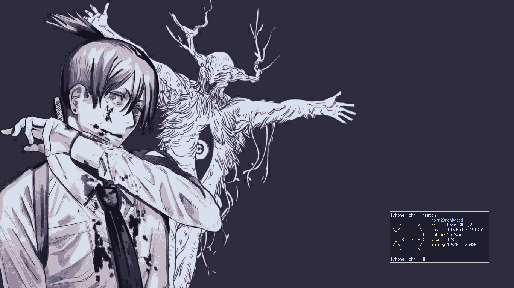

Projetos
 Aqui eu guardo o meu setup do Labwc, um compositor Wayland.
Ele é o meu setup atual, porém eu não fiz o upload de todas as
minhas modificações nele, pelo menos por enquanto.
Aqui eu guardo o meu setup do Labwc, um compositor Wayland.
Ele é o meu setup atual, porém eu não fiz o upload de todas as
minhas modificações nele, pelo menos por enquanto.
 Esse repositório se trata de um setup com múltiplas paletas
de cores, sendo elas: Solarized Dark/Light, Rosé Pine e Nord.
Todo o ambiente gira em torno de utilitários e programas
que feitos pela equipe Suckless ou simpatizantes.
Esse repositório se trata de um setup com múltiplas paletas
de cores, sendo elas: Solarized Dark/Light, Rosé Pine e Nord.
Todo o ambiente gira em torno de utilitários e programas
que feitos pela equipe Suckless ou simpatizantes.
 Nesse repositório está guardado o meu rice do OpenBSD, ele faz o uso da maior parte das ferramentas que já vem pré instaladas no OpenBSD, como por exemplo o Xenodm, CWM e FVWM.